01即刻成为正片
导入的那一刻，就是照片。
导入底片的照片，正片立刻出现在屏幕上——以画面自身的灰色为基准平衡，橙色片基已去除。长按可再次查看底片，给好照片加星标，还能把一格的调整应用到整卷。
把底片放在光源上拍一张（一台显示白色的 iPad 就够了），再从“照片”或“文件”导入。Filmlume 像冲印店的扫描仪一样读取彩色负片、黑白底片和反转片：以密度计算，去除橙色片基，并以导入时的完整分辨率还原画面。手机里已有的任何照片，也能用 37 种胶片风格之一来冲印。 满意之后，可以直接在编辑器里通过分享菜单，把成片发送到信息、WhatsApp、邮件或任何其他应用。 已针对 iPhone Duo 优化。


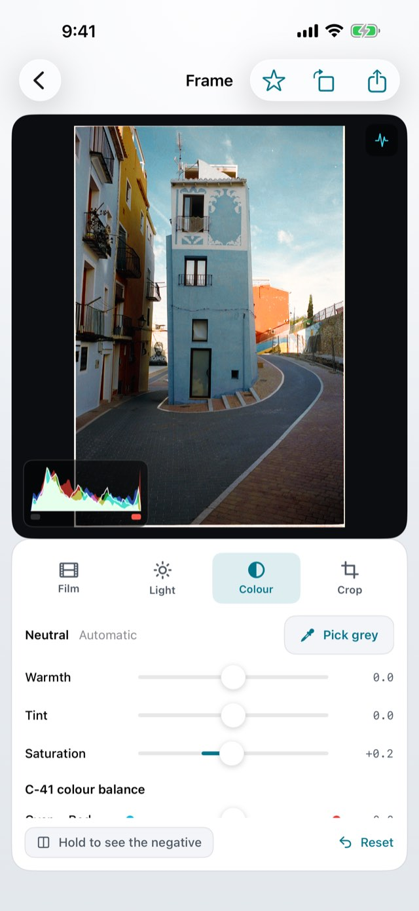
一鞋盒的底片，却没有扫描仪。
一台显示白色的 iPad，每格拍一张——照片就一张张回来了。
在图片上左右拖动。左边是刚从胶片扫描仪里出来的 35 毫米底片——橙色的遮罩，所有颜色都是反的。右边是同一帧在 Filmlume 里的样子。
作者自己的胶片。风格：Portrait 400 · 色彩 +15。
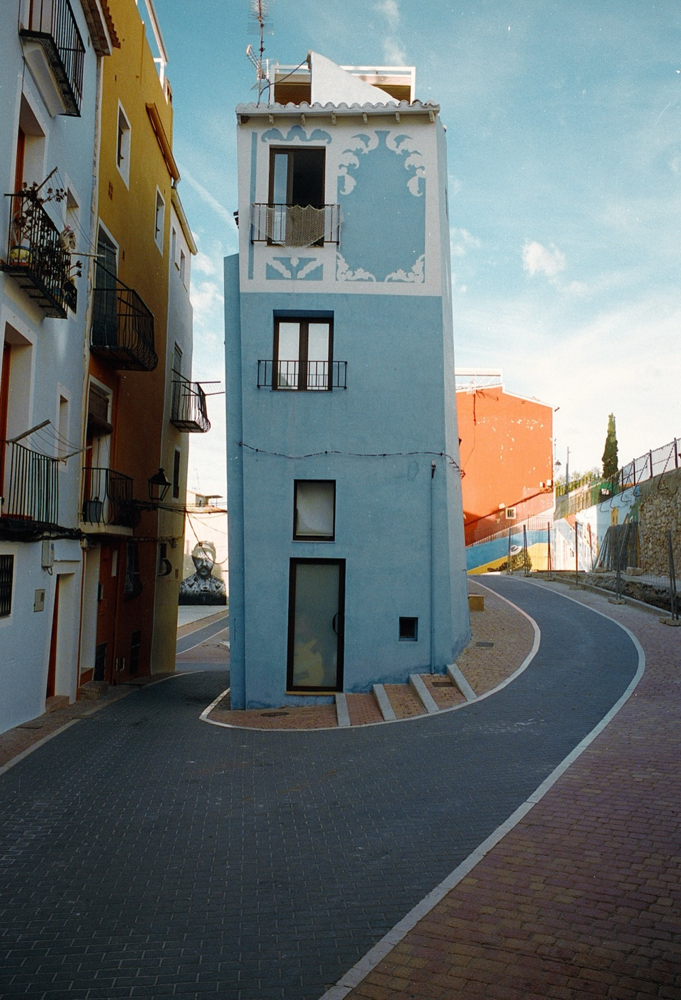
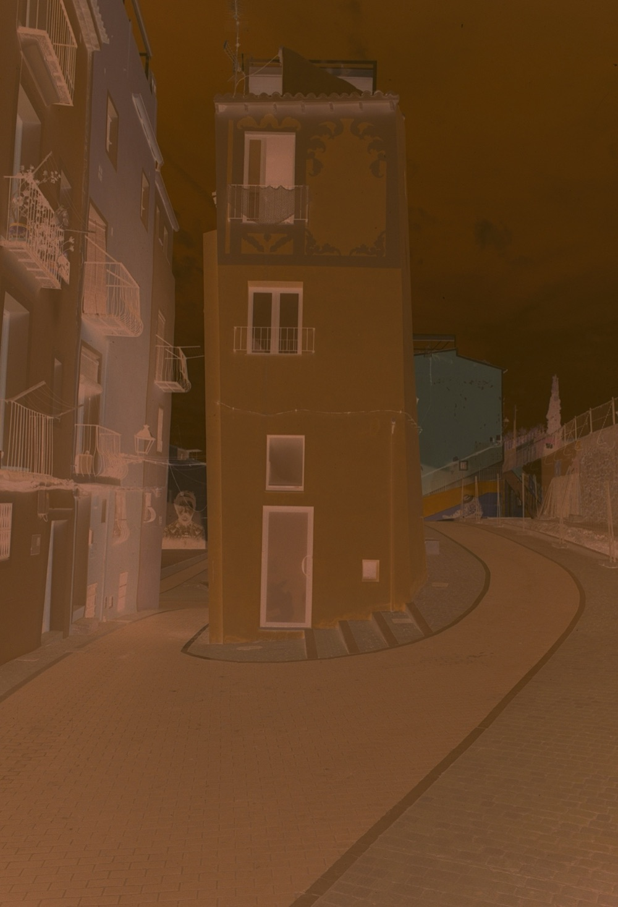
底片照片导入底片的照片，正片立刻出现在屏幕上——以画面自身的灰色为基准平衡，橙色片基已去除。长按可再次查看底片，给好照片加星标，还能把一格的调整应用到整卷。
选择你所用胶片的风格——37 种原创风格，从柔和的人像色彩、鲜艳的日光，到颗粒感的黑白和明亮的反转片——手机里的照片也能用它们冲印。每张照片都可以继续编辑。
曝光、对比度、高光、阴影、色温、色调、饱和度和彩色放大机的滤光调整，配有实时直方图、双指缩放、拉直和裁剪——数值与滑块同步变化，轻点两下即可把任意滑块归零，轻扫即可直接进入下一格。可以从片边取片基，或点一下灰色部分，精确平衡色彩。
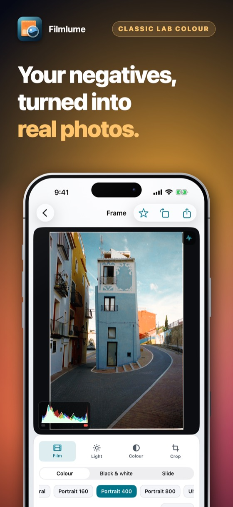
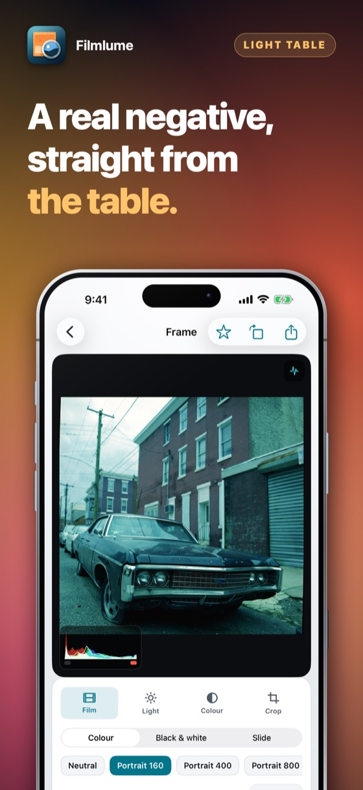
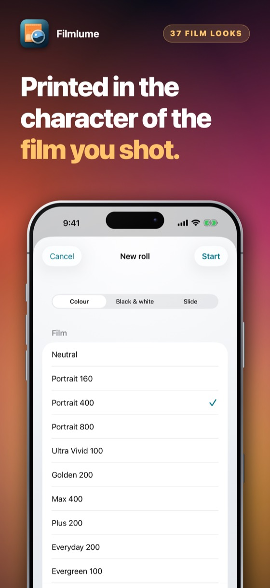
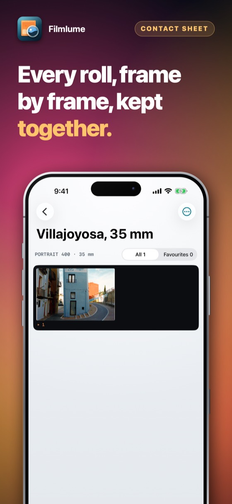
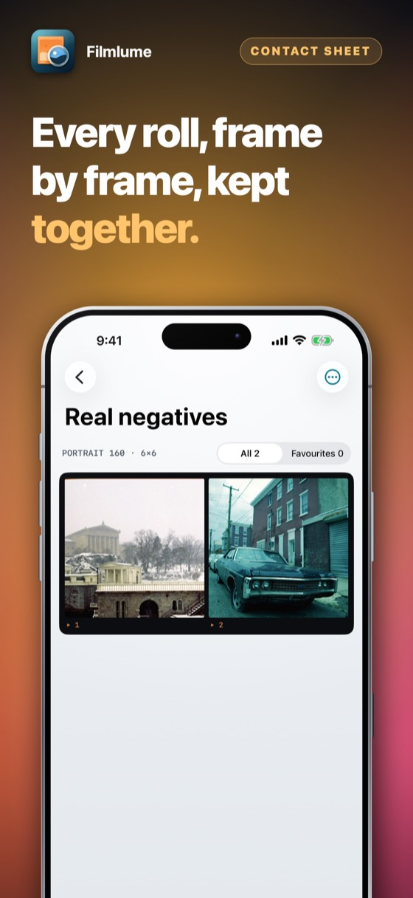
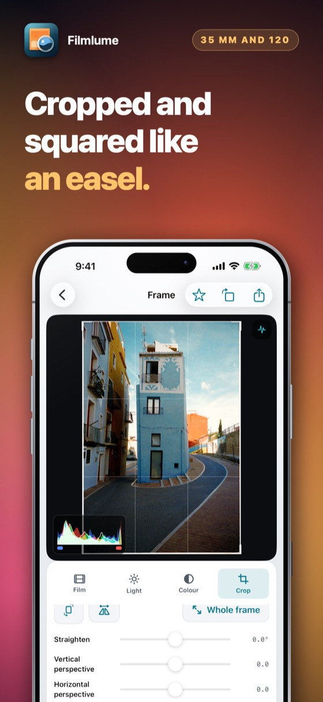
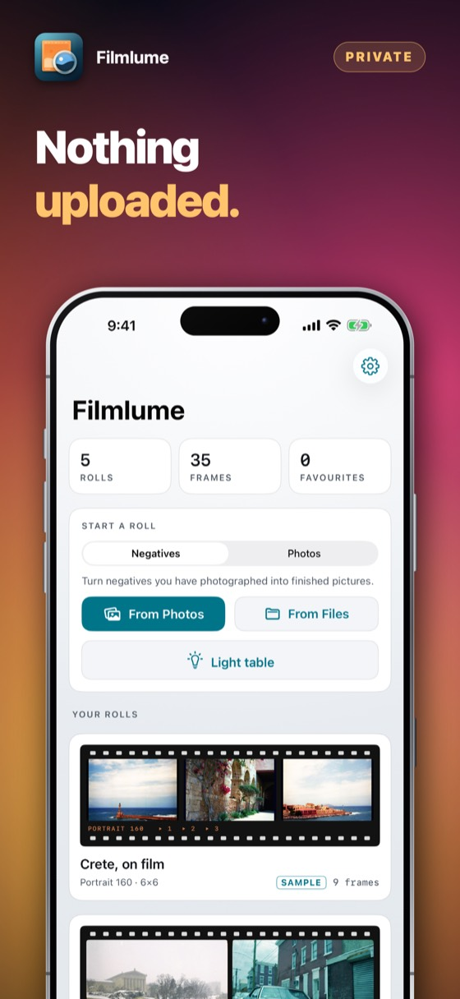
从一条胶片，到手机里的一张照片。
把底片放在灯箱上——或放在显示本 App 灯箱的 iPad 上。
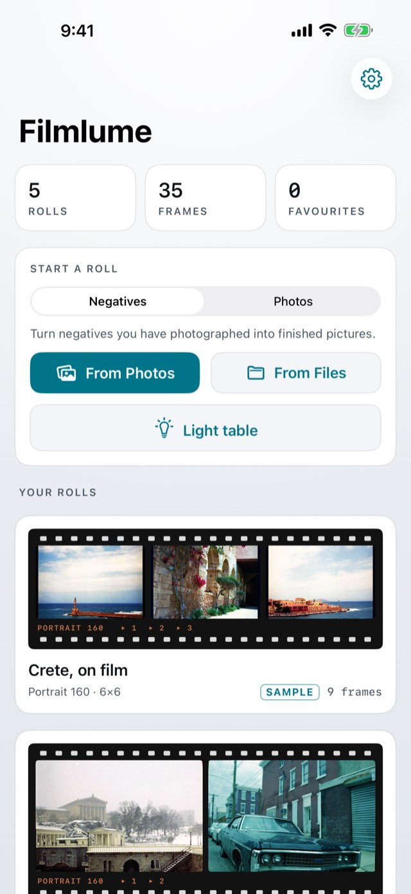
在胶片正上方，用任何相机或 iPhone 自带的“相机”App 拍摄。RAW、DNG 或 TIFF 保留的信息最多。
新建一卷——选择胶片和画幅——然后在“照片”或“文件”中选取图片。
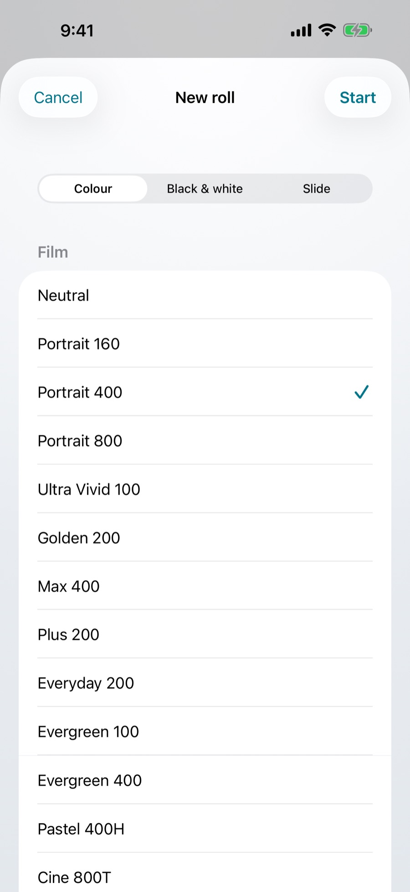
胶片风格、光线、色彩和裁剪——无损编辑，随时可撤销。
以 10 位 HEIF 将原图的每个像素存入“照片”，导出 JPEG 发送，或导出 16 位 TIFF 继续编辑。只有裁剪才会让它变小。
拍下底片很容易。把颜色调对，才是需要冲印店的部分——或者用它。
| 问题 | 常见做法 | Filmlume |
|---|---|---|
| 橙色片基 | 直接反转，画面变蓝 | 利用胶片自身的片基去除 |
| 色彩平衡 | 和滑块较劲 | 每一层色彩都已平衡，或以你点选的灰色为准 |
| 所见即所得 | 之后再在电脑上反转 | 导入一格，正片立刻显示在屏幕上 |
| 胶片个性 | 千篇一律的一种风格 | 37 种原创胶片风格——柔和、鲜艳、颗粒感或反转片——作为起点 |
| 你保留的是 | 缩小的副本 | 原图的每一个像素——输入 1 亿像素，输出也是 1 亿像素——以及 16 位 TIFF |
从“照片”新建一卷，就能用胶片风格冲印图库中的任何照片。原图永远不会被改动。
在画面上显示红、绿、蓝和亮度，阴影或高光丢失时会亮灯提示。
给值得保留的格加星标，只显示它们，并一次性全部存入“照片”。
每格都按卷归组，并记着拍摄所用的胶片——一格的调整也可以应用到整卷。
在你存储或分享之前，照片始终留在你的设备上。
三天内试用所有功能——不收费，也不会自动续订。之后一次付款，即可永久拥有。
无需账户，无需注册。完整试用三天；之后它只会询问一次，由你决定。
即将登陆 App Store价格以你所在地区的货币显示在 App Store 中。免费三天，之后一次付款——不会续订。
一个光源，以及能让手机保持稳定的东西。显示灯箱的 iPad 或第二台 iPhone 能提供均匀、无频闪的光，大到足以放下 6×9。支架、翻拍架或一摞书，都能让手机保持在胶片正上方。
以你导入图片的完整分辨率制作——相机的 RAW 或 DNG、iPhone 的 ProRAW、扫描仪的 16 位 TIFF——并以相同分辨率导出：1 亿像素的文件，导出时仍是 1 亿像素。转换以密度计算，与冲印店扫描仪相同，因此彩色负片不会出现简单反转带来的浑浊偏色。专业胶片扫描仪能解析更多颗粒；用于分享、常规尺寸冲印和保存，效果已非常出色。
不是。它们是我们原创的风格，各自参照某一类胶片出名的冲印效果——对比度、饱和度和色彩倾向——作为起点应用。它们使用我们自己的名称；没有任何胶片厂商与本 App 有关。
支持。反转片按正片读取，只设定黑点和白点；黑白底片以灰阶转换。
每款应用都可以在付款前完整试用三天。优惠会显示在 App Store 页面和应用内，不会有意外扣费；试用结束后，由你决定，只需决定一次。
在任何扣费之前，App Store 页面都会用你所在地区的货币显示价格和付费方式——一次性购买或订阅。付款由 Apple 处理，开发者看不到你的银行卡或姓名。应用内没有广告。
可以。随时在 App Store 取消：点右上角你的头像，再点「订阅」。这是唯一能停止订阅的地方——钱是 Apple 收的，应用无法替你操作。已经付过的周期内一切照常使用。
退款由 Apple 处理，不是我们——我们从来看不到你的付款信息，也无法退款。请前往 reportaproblem.apple.com，登录后选择那笔购买。
你买的东西属于你的 Apple 账户。在 iPad 或新 iPhone 上用同一个 Apple 账户登录，打开应用，在购买页选择「恢复购买」。不会再扣一次钱。
一次购买对应一个 Apple 账户。不参与家人共享，也不能在公司里转手——第二个人需要自己买。
不会。没有账户、没有登录、没有服务器。应用保存的一切都在您自己的设备上，删除应用后即消失。
它引起的唯一网络流量属于 App Store，发生在您购买、订阅或恢复时。
取决于您设备的设置，前提是应用已翻译成该语言；否则显示英文。没有会设错的语言选项—— 更改 iPhone 的语言，应用也会随之改变。
付款、退款与取消
这个应用的每一笔钱都由 Apple 收取。也就是说，只有 Apple 能查询扣款、停止订阅或者退款。开发者从来看不到卡号、姓名或付款，也无法更改。
取消订阅在 App Store 里完成，别处都不行。打开 App Store，点右上角你的头像，再点订阅。取消会停掉下一次扣款；已经付过的周期会用到最后一天。请在周期结束前至少 24 小时操作，否则这次续订照样会扣。
本 App 做不到的事
它不会自动去除灰尘和划痕，也不是滚筒扫描仪。和任何扫描一样，色彩是一种诠释；胶片风格是起点，并非经过认证的模拟，每张照片都可以调整。
购买归属于您的 Apple 账户，而不是某一台设备。换新手机或重新安装后，打开应用并在购买页面选择“恢复”。不会重复收费。
打开 App Store，点右上角你的头像，再点订阅。这是唯一能停止订阅的地方——钱是 Apple 收的，应用无法替你操作。取消会停掉下一次扣款，已经付过的周期会用到最后一天。一次性买断不会续订，也就没什么好取消的。
仍然没有解决？请写信到 alpenlume@gmail.com —— 请说明是哪款应用、使用的是哪台 iPhone 或 iPad，以及您原本期待发生什么。
最后更新于 2026年9月10日。
简要说明
Filmlume 不收集任何信息，也不发送任何内容。你的照片留在你的设备上。
什么都没有。这款应用没有账户、没有登录、没有分析统计、没有广告标识符、没有崩溃报告服务，也没有任何形式的追踪。不会建立任何画像，也不会与任何人共享任何内容。
这个应用没有自己的服务器：没有需要登录的地方，也永远不会有任何内容上传给开发者。它拿网络做什么——这些应用里大多数什么也不做——写在上面的“在你的设备上”一节。
有两件事确实会用到互联网，而它们都属于别人。一是 App Store，发生在您购买、订阅或恢复时。二是当您分享某样东西时 —— 一道菜、一份食谱、一份文件 —— iOS 会把它交给您选择的应用，无论是信息、邮件还是 WhatsApp，由那个应用通过自己的连接、按照自己的隐私政策发送。在您按下发送之前，什么都不会离开；而这款应用永远不会知道它去了哪里。
付款完全由 Apple 处理。应用永远看不到卡号、姓名或地址；它只向 App Store 问一个问题 —— 这个 Apple 账户是否拥有该应用 —— 并得到“是”或“否”。该交易适用 Apple 自己的隐私政策。
本应用并非面向儿童，且不从任何人处收集任何信息，因此不存在任何有关儿童的信息需要披露、更正或删除。
数据保护法赋予您查看、更正、导出和删除有关您的个人数据的权利。由于我们没有保存任何数据，应要求时也就没有什么可以提供或删除。应用拥有的一切都在您自己的设备上：删除应用即会移除它们，而它们从未存在于别处。
若本政策日后有所变更，上方会注明日期。不会追溯修改，因为不存在任何被收集的数据可以因变更而被重新允许使用。